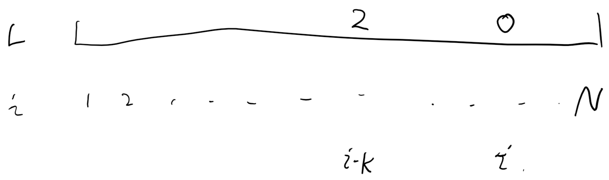
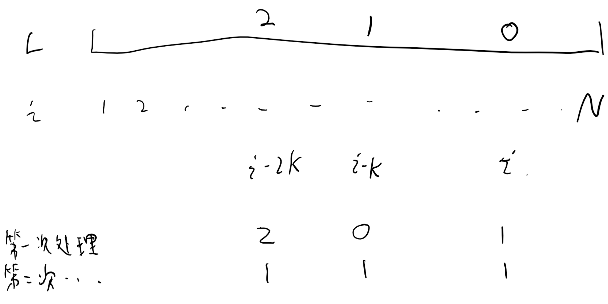
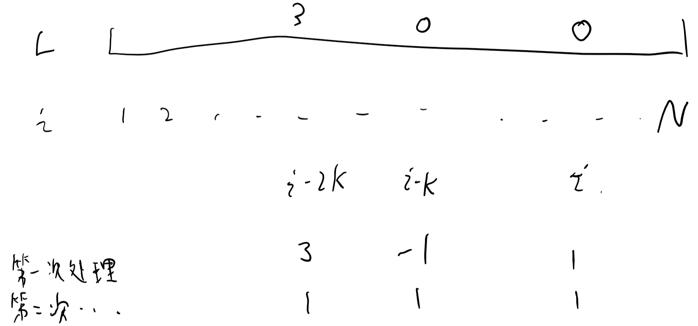
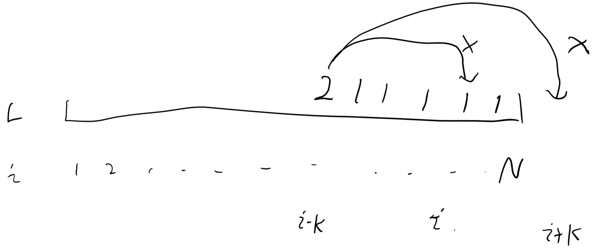

HDU-5090 Game with Pearls
题目：
Game with Pearls
Time Limit:1000MS Memory Limit:65536KB 64bit IO Format:%I64d & %I64u
Description
Tom and Jerry are playing a game with tubes and pearls. The rule of the game is:
1) Tom and Jerry come up together with a number K.
2) Tom provides N tubes. Within each tube, there are several pearls. The number of pearls in each tube is at least 1 and at most N.
3) Jerry puts some more pearls into each tube. The number of pearls put into each tube has to be either 0 or a positive multiple of K. After that Jerry organizes these tubes in the order that the first tube has exact one pearl, the 2nd tube has exact 2 pearls, …, the Nth tube has exact N pearls.
4) If Jerry succeeds, he wins the game, otherwise Tom wins.
Write a program to determine who wins the game according to a given N, K and initial number of pearls in each tube. If Tom wins the game, output “Tom”, otherwise, output “Jerry”.
Input
The first line contains an integer M (M<=500), then M games follow. For each game, the first line contains 2 integers, N and K (1 <= N <= 100, 1 <= K <= N), and the second line contains N integers presenting the number of pearls in each tube.
Output
For each game, output a line containing either “Tom” or “Jerry”.
Sample Input
2
5 1
1 2 3 4 5
6 2
1 2 3 4 5 5
Sample Output
Jerry
Tom
代码：
1 | // oj.cpp : 定义控制台应用程序的入口点。 |
解析&吐槽：
貌似我没在网上看到和我相同做法的人。采用我的方法可以把复杂度降到 O(n)，总耗时只有 0ms。
题目给你了一个有 n 项的数列和一个数字 k，给每个数字加上 k 的倍数（或者加 0）得到一个新的数列， 问你对此数列排序之后能不能得到一个以 1 开头，以 n 结尾，公差为 1 的等差数列。
原理是这样的，我们建立一个数组 L 来表示某个数字出现几次， L[i]=a 表示数字 i 在原数列中 出现了 a 次。读入所有的数字来更新此数组，然后在 judge 函数中从后往前扫描。

如图所示，当找到一个 0 的时候（小于 0 的情况一会再说），必须在前面找到一个大于等于 2 的数字； 如果 i 的位置是 0，就表示数字 i 在数列中不存在，就必须找到一个数字 i-nk(n>=0) 来给它加 nk 得到 i。我们可以写一个 dfs 来找到前面大于等于 2 的数字（因为那个数字自己的位置在处理过后必须 也是 1），然后枚举结果，如果找不到那个数字，就返回 false。实际上第一次我也是这么做的：
1 | bool dfs(int i) |
这是我原来的代码，也可以 ac，就是效率比较低。
但是仔细想想我们就会发现，反正这个数组是从后往前扫描的，我们完全可以把一个数字处理好几遍。 如图所示：

i 处缺少一个 0，我们不需要依次扫描 i-k i-2k… ，只需要拿 i-k 处的个数补上 i 处的即可， 下次扫描到 i-k 处的时候就可以拿 i-2k 的数字来补上了。如果 i-k（注意是 i-k，不是 L[i-k]） 小于等于 0，代表没办法拿前面 的来补，那么数列一定不能符合要求，返回 false。这么做就不需要考虑 L[i]<0 的情况了， 如图所示：  如果用例可以满足题目要求，最后一定可以把 L 数组平均到每个数字都是 1，我们只需要拿 i-k 位置 的数字把 i 位置的补成 1 即可。
需要注意的是 L[i]>=2 的情况。我们是从后往前扫描的，如果在 i 的后面有小于 1 的数字就一定 会拿 i 处的数字来补上了；如果 i 处的数字大于等于 1，说明后面的所有数字都已经被填成了 1， 已经没法把这个数字拿过去了（数列中的数字最大就是 n，我们是从 n 开始扫描的；i 不可能被加到 大于 n），这样一定是不符合要求的，返回 false： 
扫描到最后如果还没有返回 false，说明 L 从 1 到 n 的每一个数都变成 1 了，这个数列是可以生成 的，返回 true。